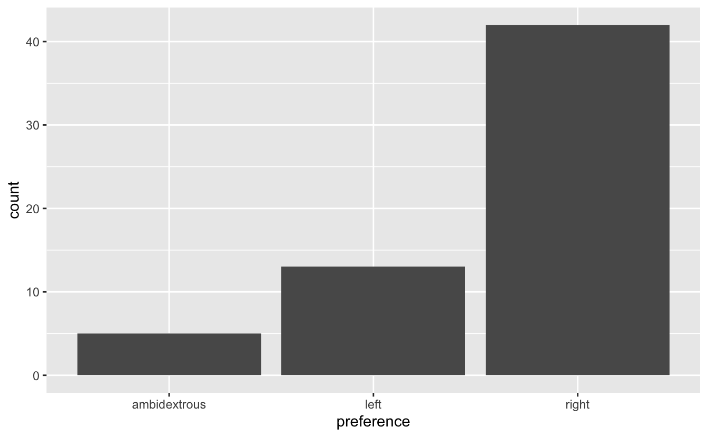

x <- factor(c("BS", "MS", "PhD", "MS"))
x[1] BS MS PhD MS
Levels: BS MS PhD
Data tidying and importing
We talked about types so far, next we’ll introduce the concept of classes
R uses factors to handle categorical variables, variables that have a fixed and known set of possible values
x <- factor(c("BS", "MS", "PhD", "MS"))
x[1] BS MS PhD MS
Levels: BS MS PhDtypeof(x)[1] "integer"class(x)[1] "factor"We can think of factors like character (level labels) and an integer (level numbers) glued together
glimpse(x) Factor w/ 3 levels "BS","MS","PhD": 1 2 3 2as.integer(x)[1] 1 2 3 2y <- as.Date("2025-01-01")
y[1] "2025-01-01"typeof(y)[1] "double"class(y)[1] "Date"We can think of dates like an integer (the number of days since the origin, 1 Jan 1970) and an integer (the origin) glued together
as.integer(y)[1] 20089as.integer(y) / 365 # roughly 55 yrs[1] 55.03836We can think of data frames like like vectors of equal length glued together
df <- data.frame(x = 1:2, y = 3:4)
df x y
1 1 3
2 2 4typeof(df)[1] "list"class(df)[1] "data.frame"Lists are a generic vector container; vectors of any type can go in them
pull() function, we extract a vector from the data framedf x y
1 1 3
2 2 4df |>
pull(y)[1] 3 4handedness <- read_csv("data/handedness.csv")
glimpse(handedness)Rows: 60
Columns: 2
$ name <chr> "Abdiel Camacho", "Abram Sanders", "Ady…
$ preference <chr> "left", "ambidextrous", "right", "right…ggplot(handedness, mapping = aes(x = preference)) +
geom_bar()
… stay for the logo